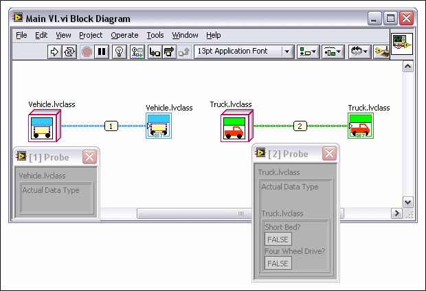

While LabVIEW object-oriented programming is similar to other object-oriented programming languages conceptually, because LabVIEW is a dataflow graphical programming environment some differences exist in how LabVIEW manipulates and interacts with LabVIEW class data and how you can debug the class code.
Objects in LabVIEW are passed by value, not by reference. LabVIEW creates copies of the object following the same rules traditionally used for clusters and arrays.
Constructors and destructors in LabVIEW object-oriented programming are implicit. You do not have to call a constructor to initialize LabVIEW class data. LabVIEW calls a default constructor whenever LabVIEW needs to initialize a class. Initialization of a class typically occurs at a front panel control or block diagram constant. LabVIEW initializes the values of the class as the default values you set in the private data control. When LabVIEW no longer needs the LabVIEW class information, LabVIEW handles memory deallocation as it does for clusters and arrays. If you want to set another value for the class data, you must create a member VI that sets the new value. For example, if you set the default value of Number of Gears in class Vehicle to 3 when you create class Vehicle, and you want to assign a different value to Number of Gears that class Truck inherits, you must create a member VI that changes the value in class Vehicle. One option for setting a new value is to create a member VI that has no inputs but outputs a class with the value you want to assign to Number of Gears, thereby creating a block diagram constant of the class data type.
LabVIEW stores data as flattened data. The Flatten To String and Unflatten From String functions can handle all class data types. LabVIEW flattens and unflattens the data automatically. While all type descriptors retain the type of data for flattened data types in LabVIEW, the LabVIEW class flattened data itself retains this information as well as class version information. Because the LabVIEW class retains information pertinent to unflattening the LabVIEW class, if the LabVIEW class cannot be found because you move or delete the class, LabVIEW cannot unflatten the data and you receive an error message. Similar to the behavior LabVIEW exhibits when it encounters a missing subVI, you can open the member VI and notice LabVIEW dims the control that is missing the LabVIEW class data. When you load the LabVIEW class corresponding to the broken control, the data is unflattened and the control is no longer broken.
|
Note��You also can use the Flatten To XML and Unflatten From XML functions to handle class data. |
A LabVIEW class control reports a warning if the data in the control is written with a more recent version of the LabVIEW class than the version of the class LabVIEW has in memory. LabVIEW increments the LabVIEW class version number anytime you make changes to the data type of the private data control or the inheritance of the class. You can view the LabVIEW class version number in the Class Properties dialog box. LabVIEW increments the version number of the class automatically if:
If you rename a class, LabVIEW considers it a new class, deletes the mutation history of the class, and resets the version number to 1.0.0.0. LabVIEW renames the class if you do one of the following actions:
|
Note��If you decide to change the name back to the original class name without making any other changes, the class will not be identical to the original class because the mutation history no longer exists. For example, if you rename class Vehicle to Vehicle #1 and then change the name back to Vehicle, class Vehicle is no longer identical to the original class. |
Tracking the version number of the LabVIEW class is beneficial to LabVIEW class users who develop applications using LabVIEW classes. For example, you have a LabVIEW class in an application that uses an unsigned 32-bit integer in the private data control of the class. A LabVIEW class developer can send you a version of the LabVIEW class that changes the numeric control in the private data control to a double-precision floating-point number. Because LabVIEW tracks version changes and knows how to flatten and unflatten data on all LabVIEW classes, you can replace the old version of the LabVIEW class with the new version and run the program without making changes to it.
|
Note��If you try to unflatten data from a future version of a LabVIEW class, LabVIEW returns an error. For example, this error might occur if you have data with a version number of 1.0.0.3 but the LabVIEW class in memory is version 1.0.0.2. |
When LabVIEW encounters an older version of the LabVIEW class, LabVIEW handles the data mutation in one of the following ways:
LabVIEW always applies mutations across multiple versions serially, for example from 1.0.0.2 to 1.0.0.6.
|
Note��You cannot revert a LabVIEW class if the class version is incremented. LabVIEW does not have sufficient information to undo a change to the data in LabVIEW class controls and indicators. To revert current changes, do not save any changes. Unload the class and all VIs that reference the class and then reload from disk. |
Refer to the following support document at ni.com for more information about how LabVIEW mutates data when you edit a LabVIEW class.
You can upcast classes using the To More Generic Class function and downcast using the To More Specific Class function. You also can use these functions for refnum data types that have an inheritance hierarchy, such as VI Server Control Refnums, and the functionality is identical. Using the To More Generic Class function does not change the data but it does change the type of the wire that carries the data. However, the function has no effect when the VI is running. The primary use of the To More Generic Class function is as a way of eliminating coercion dots for those programmers who have a strict code convention against such data conversions.
Using the To More Specific Class function leaves the data unchanged unless an error occurs. If the data on the wire at run time is not of the more specific class, the function returns an error and the output data is the default value of the wire type. The primary use of the To More Specific Class function is to do type testing on a value of a parent class. Frequently programmers connect the same parent class wire to several To More Specific Class function calls, each going to a different more specific class, and then execute different code based on which To More Specific Class function does not return an error. This is highly inefficient. If you are considering this method of testing and have permission to modify the parent class, you might write a dynamic member VI on the parent class and have each of the child classes override it with the functionality appropriate for each child class.
If, at run time, LabVIEW detects that you wired a child class object to a subVI that accepts a parent class object, LabVIEW can downcast the subVI output to a child class object automatically. Automatic downcasting does not require you to use the To More Specific Class function. However, automatic downcasting can occur only if LabVIEW can guarantee that the class object you wire to the subVI is compatible with the input the subVI accepts. For example, if you store a class object in a variant and wire the variant data to a subVI, LabVIEW cannot guarantee that the subVI contains data that belongs to the same class as the data the variant originally stored. To help LabVIEW check that the class object you wire to the subVI is compatible with the class object the subVI accepts, use the Preserve Run-Time Class function. If the two objects are incompatible, the function returns an error and sets the class of the output data to the parent class the subVI accepts. You also can use this function with data value references. The Data Value Reference Read / Write Element border node must preserve run-time type. You can use the Preserve Run-Time Class function to check that the class object you wire to the Data Value Reference Write node is compatible with the class object you wired to the Data Value Reference Read border node.
|
Note��LabVIEW cannot automatically downcast recursive subVIs. Automatic downcasting breaks caller VIs if they call recursive subVIs on the block diagram of dynamic dispatch VIs or inside In Place Element structures for data value references. Use the Preserve Run-Time Class function on the block diagram of the recursive subVI to check that the class object you wire to the subVI is compatible with the class object the subVI accepts. If the class objects are compatible, the caller VIs outside of the recursive cycle do not break. |
You can lock LabVIEW classes to prohibit LabVIEW class users from viewing the member VIs that are part of the internal implementation of the application. Locking the LabVIEW class prevents access to the private member VIs which in turn can help prevent errors being introduced to the application. As with project libraries, adding password protection to LabVIEW classes does not add password protection to the member VIs. You must password protect the member VIs individually.
If you lock a LabVIEW class, only the data type appears in the Context Help window when you move the cursor over the class wire. If you move the cursor over the wire of an unlocked LabVIEW class, the Context Help window shows the private data of the class and the private data of the class for all unlocked parent classes. Similar rules apply to the information LabVIEW displays in generic probes. Refer to Using Probes in LabVIEW Classes for information about using generic probes with LabVIEW classes.
|
Note��Notice the Context Help window for the LabVIEW class wire and the LabVIEW class control display different information. The LabVIEW class control displays class description information for end users, while the LabVIEW class wire displays additional information about the data type for the LabVIEW class user. |
Because LabVIEW class users only can view the class information you make available, be sure to adequately document the LabVIEW class you develop. You can add class descriptions in the Class Properties dialog box and you can add member VI descriptions in the VI Properties dialog box.
You can use generic probes and custom probes to debug LabVIEW classes.
You can use generic probes on LabVIEW class wires. The generic probe on a LabVIEW class wire shows the name of the class at run time, the private class data, and the private class data for all of the parent classes. If you use the generic probe on a locked LabVIEW class, only the name of the class at run time and any unlocked private data within the class hierarchy is visible in the probe. In the following image, class Vehicle, on the left, is locked and LabVIEW does not display the private data of the class: Number of Gears, Number of Doors, Color, Make, and Model. Class Truck is not locked and LabVIEW does display its private data. Notice that LabVIEW does not display the inherited private data of class Vehicle in the generic probe for class Truck because class Vehicle is locked.

Creating custom default probes for LabVIEW classes is useful. You only can use a custom probe on a LabVIEW class wire of the exact class type as the wire type or of an ancestor of the wire type. A LabVIEW class developer can create custom probes that are members of the class and capable of displaying the private data of the class directly. A LabVIEW class user can create a custom default probe that may display any information available using public methods of the class.
A class developer can set a custom probe as the default probe for a LabVIEW class user. The generic probe of a locked LabVIEW class does not allow the LabVIEW class user to access any information about the value of the data because the data is private. Creating custom probes and setting them as the default probe for a LabVIEW class allows the class developer to provide the LabVIEW class user with a default probe that displays the appropriate data after the class developer locks the class. The custom probe must be a member of the LabVIEW class for the LabVIEW developer to set it as the default probe.
You can distribute the LabVIEW class you develop to other LabVIEW class developers and LabVIEW class users. You can distribute the class in several ways so choose the manner that most suits your needs. You can use the Application Builder to create a zip file to distribute the class or classes. You also can lock the LabVIEW class before you distribute it to limit the access the LabVIEW class user has to the private data and member VIs. Locking the class can help prevent users from introducing errors in the application.
 |
Tip��You also can access LabVIEW classes through a .NET interop assembly. LabVIEW can generate a .NET class for LabVIEW classes that you specify, and you can access these .NET classes through a .NET assembly. |